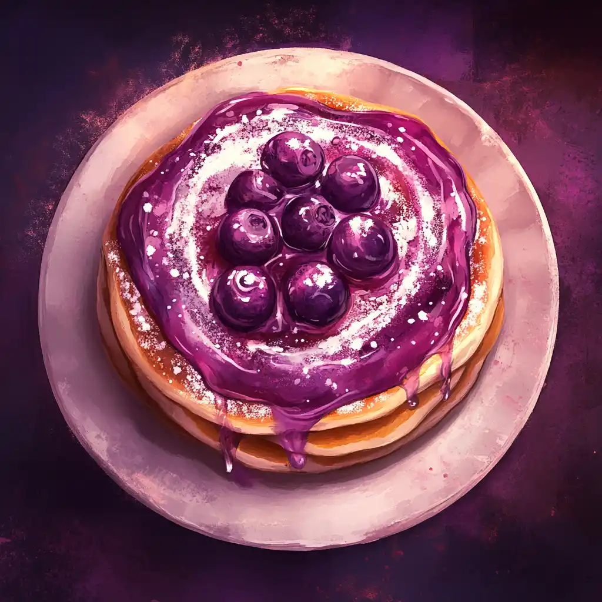

Welcome to the Grimoire!
Glorf's Mission
“I'm Glorf, and my mission is to use the power of food to bring the different races together. Goblins have always been seen as aggressive and destructive, but I’m here to change that perception one meal at a time. From human pastries to elven delicacies and hearty dwarven feasts, I’ll show that goblins can be a force of unity and friendship.”
Read Full StoryGoblin Word of the Month
Meal of the Month
Moonberry Pancakes
Light and airy pancakes infused with mystical moonberries, drizzled with nectar and sprinkled with powdered sugar.